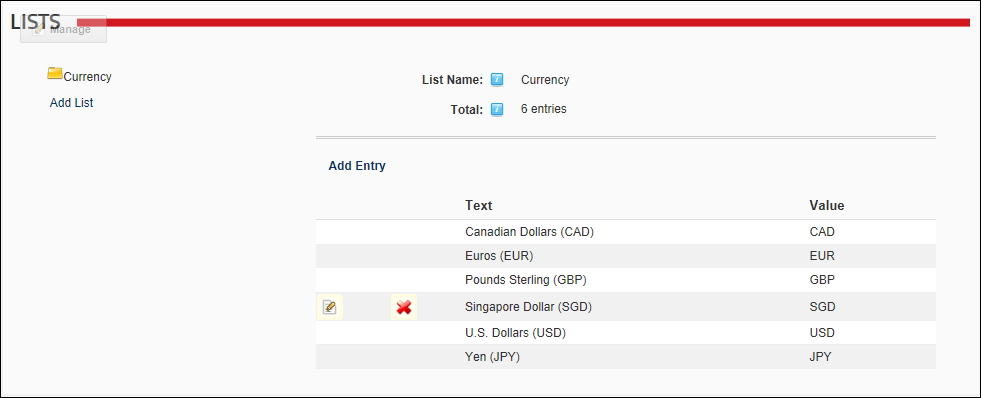

Adding a Parent List
How to add a parent list to the site using the Admin Lists page. This task can be used for custom modules that use lists. Lists created by users other than SuperUsers are automatically encoded for security purposes to prevent HTML and JavaScript being injected into the page.
- Navigate to Admin > Advanced Settings >
 Lists.
Lists.
- Click the Add List link.
- In the List Name text box, enter a name for the list.
- At Parent List, leave this field set to None Specified.
- In the Entry Text text box, enter the first entry (item) that will be in this list.
- In the Entry Value text box, enter the identifier or code for the first entry.
- Optional. At Enable Sort Order, select from these options:
- if you want to be able to reorder the entries in this list.
- to use alphabetical sort order for list entries.

- Click the Save link. This displays the new list on the left side of the module.

- You can now add addition list entries to this list. See "Adding a List Entry"